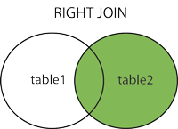
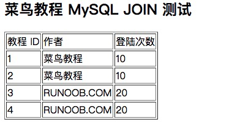

20. MySQL 连接的使用原文↗
在前几章节中，我们已经学会了如何在一张表中读取数据，这是相对简单的，但是在真正的应用中经常需要从多个数据表中读取数据。
本章节我们将向大家介绍如何使用 MySQL 的 JOIN 在两个或多个表中查询数据。
你可以在 SELECT, UPDATE 和 DELETE 语句中使用 MySQL 的 JOIN 来联合多表查询。
JOIN 按照功能大致分为如下三类：
- INNER JOIN（内连接,或等值连接）：获取两个表中字段匹配关系的记录。
- LEFT JOIN（左连接）：获取左表所有记录，即使右表没有对应匹配的记录。
- RIGHT JOIN（右连接）： 与 LEFT JOIN 相反，用于获取右表所有记录，即使左表没有对应匹配的记录。
本章节使用的数据库结构及数据下载：runoob-mysql-join-test.sql。
INNER JOIN
INNER JOIN 返回两个表中满足连接条件的匹配行，以下是 INNER JOIN 语句的基本语法：
SELECT column1, column2, ... FROM table1 INNER JOIN table2 ON table1.column_name = table2.column_name;
参数说明：
column1,column2, ... 是你要选择的列的名称，如果使用*表示选择所有列。table1,table2是要连接的两个表的名称。table1.column_name = table2.column_name是连接条件，指定了两个表中用于匹配的列。
简单的 INNER JOIN：
SELECT orders.order_id, customers.customer_name FROM orders INNER JOIN customers ON orders.customer_id = customers.customer_id;
以上 SQL 语句将选择 orders 表和 customers 表中满足连接条件的订单 ID 和客户名称。
2. 使用表别名：
SELECT o.order_id, c.customer_name FROM orders AS o INNER JOIN customers AS c ON o.customer_id = c.customer_id;
以上 SQL 语句使用表别名 o 和 c 作为 orders 和 customers 表的别名。
3. 多表 INNER JOIN：
SELECT orders.order_id, customers.customer_name, products.product_name FROM orders INNER JOIN customers ON orders.customer_id = customers.customer_id INNER JOIN order_items ON orders.order_id = order_items.order_id INNER JOIN products ON order_items.product_id = products.product_id;
以上 SQL 语句涉及了 orders、customers、order_items 和 products 四个表的连接。它选择了订单 ID、客户名称和产品名称，连接了这些表的关联列。
4. 使用 WHERE 子句进行过滤：
SELECT orders.order_id, customers.customer_name FROM orders INNER JOIN customers ON orders.customer_id = customers.customer_id WHERE orders.order_date >= '2023-01-01';
以上 SQL 语句在 INNER JOIN 后使用 WHERE 子句，过滤了订单日期在 '2023-01-01' 及以后的订单。
LEFT JOIN
LEFT JOIN 返回左表的所有行，并包括右表中匹配的行，如果右表中没有匹配的行，将返回 NULL 值，以下是 LEFT JOIN 语句的基本语法：
SELECT column1, column2, ... FROM table1 LEFT JOIN table2 ON table1.column_name = table2.column_name;
1. 简单的 LEFT JOIN：
SELECT customers.customer_id, customers.customer_name, orders.order_id FROM customers LEFT JOIN orders ON customers.customer_id = orders.customer_id;
以上 SQL 语句将选择客户表中的客户 ID 和客户名称，并包括左表 customers 中的所有行，以及匹配的订单 ID（如果有的话）。
2. 使用表别名：
SELECT c.customer_id, c.customer_name, o.order_id FROM customers AS c LEFT JOIN orders AS o ON c.customer_id = o.customer_id;
以上 SQL 语句使用表别名 c 和 o 分别代替 customers 和 orders 表的名称。
3. 多表 LEFT JOIN：
SELECT customers.customer_id, customers.customer_name, orders.order_id, products.product_name FROM customers LEFT JOIN orders ON customers.customer_id = orders.customer_id LEFT JOIN order_items ON orders.order_id = order_items.order_id LEFT JOIN products ON order_items.product_id = products.product_id;
以上 SQL 语句连接了 customers、orders、order_items 和 products 四个表，并选择了客户 ID、客户名称、订单 ID 和产品名称。左连接保证了即使在 order_items 或 products 中没有匹配的行，仍然会返回客户和订单的信息。
4. 使用 WHERE 子句进行过滤：
SELECT customers.customer_id, customers.customer_name, orders.order_id FROM customers LEFT JOIN orders ON customers.customer_id = orders.customer_id WHERE orders.order_date >= '2023-01-01' OR orders.order_id IS NULL;
以上 SQL 语句在 LEFT JOIN 后使用 WHERE 子句，过滤了订单日期在 '2023-01-01' 及以后的订单，以及没有匹配订单的客户。
LEFT JOIN 是一种常用的连接类型，尤其在需要返回左表中所有行的情况下。当右表中没有匹配的行时，相关列将显示为 NULL。在使用 LEFT JOIN 时，请确保理解连接条件并根据需求过滤结果。
RIGHT JOIN
RIGHT JOIN 返回右表的所有行，并包括左表中匹配的行，如果左表中没有匹配的行，将返回 NULL 值，以下是 RIGHT JOIN 语句的基本语法：：
SELECT column1, column2, ... FROM table1 RIGHT JOIN table2 ON table1.column_name = table2.column_name;
以下是一个简单的 RIGHT JOIN 实例：
SELECT customers.customer_id, orders.order_id FROM customers RIGHT JOIN orders ON customers.customer_id = orders.customer_id;
以上 SQL 语句将选择右表 orders 中的所有订单 ID，并包括左表 customers 中匹配的客户 ID。如果在 customers 表中没有匹配的客户 ID，相关列将显示为 NULL。
在开发过程中中，RIGHT JOIN 并不经常使用，因为它可以用 LEFT JOIN 和表的顺序交换来实现相同的效果。例如，上面的查询可以通过使用 LEFT JOIN 改写为：
SELECT customers.customer_id, orders.order_id FROM orders LEFT JOIN customers ON orders.customer_id = customers.customer_id;
以上 SQL 语句返回相同的结果，因为 LEFT JOIN 与 RIGHT JOIN 是对称的。在实际使用中，你可以根据个人偏好或组织规范选择使用哪种形式。
在命令提示符中使用 INNER JOIN
INNER JOIN 可以根据指定的连接条件将多个表连接在一起，因此你可以在查询中获取相关联的数据。
在使用 INNER JOIN 时，请确保连接条件是准确的，并理解连接的表之间的关系。
实例
我们在 RUNOOB 数据库中有两张表 tcount_tbl 和 runoob_tbl。
尝试以下实例：
测试实例数据
mysql> use RUNOOB; Database changed mysql> SELECT * FROM tcount_tbl; +---------------+--------------+ | runoob_author | runoob_count | +---------------+--------------+ | 菜鸟教程 | 10 | | RUNOOB.COM | 20 | | Google | 22 | +---------------+--------------+ 3 rows in set (0.01 sec) mysql> SELECT * from runoob_tbl; +-----------+---------------+---------------+-----------------+ | runoob_id | runoob_title | runoob_author | submission_date | +-----------+---------------+---------------+-----------------+ | 1 | 学习 PHP | 菜鸟教程 | 2017-04-12 | | 2 | 学习 MySQL | 菜鸟教程 | 2017-04-12 | | 3 | 学习 Java | RUNOOB.COM | 2015-05-01 | | 4 | 学习 Python | RUNOOB.COM | 2016-03-06 | | 5 | 学习 C | FK | 2017-04-05 | +-----------+---------------+---------------+-----------------+ 5 rows in set (0.01 sec)接下来我们就使用MySQL的INNER JOIN(也可以省略 INNER 使用 JOIN，效果一样)来连接以上两张表来读取runoob_tbl表中所有runoob_author字段在tcount_tbl表对应的runoob_count字段值：
INNER JOIN
mysql> SELECT a.runoob_id, a.runoob_author, b.runoob_count FROM runoob_tbl a INNER JOIN tcount_tbl b ON a.runoob_author = b.runoob_author; +-------------+-----------------+----------------+ | a.runoob_id | a.runoob_author | b.runoob_count | +-------------+-----------------+----------------+ | 1 | 菜鸟教程 | 10 | | 2 | 菜鸟教程 | 10 | | 3 | RUNOOB.COM | 20 | | 4 | RUNOOB.COM | 20 | +-------------+-----------------+----------------+ 4 rows in set (0.00 sec)以上 SQL 语句等价于：
WHERE 子句
mysql> SELECT a.runoob_id, a.runoob_author, b.runoob_count FROM runoob_tbl a, tcount_tbl b WHERE a.runoob_author = b.runoob_author; +-------------+-----------------+----------------+ | a.runoob_id | a.runoob_author | b.runoob_count | +-------------+-----------------+----------------+ | 1 | 菜鸟教程 | 10 | | 2 | 菜鸟教程 | 10 | | 3 | RUNOOB.COM | 20 | | 4 | RUNOOB.COM | 20 | +-------------+-----------------+----------------+ 4 rows in set (0.01 sec)

MySQL LEFT JOIN
LEFT JOIN 是一种常用的连接类型，尤其在需要返回左表中所有行的情况下。
当右表中没有匹配的行时，相关列将显示为 NULL。
在使用 LEFT JOIN 时，请确保理解连接条件并根据需求过滤结果。
MySQL left join 与 join 有所不同，LEFT JOIN 会读取左边数据表的全部数据，即使右边表无对应数据。
实例
尝试以下实例，以 runoob_tbl 为左表，tcount_tbl 为右表，理解 MySQL LEFT JOIN 的应用：
LEFT JOIN
mysql> SELECT a.runoob_id, a.runoob_author, b.runoob_count FROM runoob_tbl a LEFT JOIN tcount_tbl b ON a.runoob_author = b.runoob_author; +-------------+-----------------+----------------+ | a.runoob_id | a.runoob_author | b.runoob_count | +-------------+-----------------+----------------+ | 1 | 菜鸟教程 | 10 | | 2 | 菜鸟教程 | 10 | | 3 | RUNOOB.COM | 20 | | 4 | RUNOOB.COM | 20 | | 5 | FK | NULL | +-------------+-----------------+----------------+ 5 rows in set (0.01 sec)以上实例中使用了 LEFT JOIN，该语句会读取左边的数据表 runoob_tbl 的所有选取的字段数据，即使在右侧表 tcount_tbl中 没有对应的 runoob_author 字段值。

MySQL RIGHT JOIN
MySQL RIGHT JOIN 会读取右边数据表的全部数据，即使左边边表无对应数据。
在实际开发过程中，RIGHT JOIN 并不经常使用，因为它可以用 LEFT JOIN 和表的顺序交换来实现相同的效果。
实例
尝试以下实例，以 runoob_tbl 为左表，tcount_tbl 为右表，理解MySQL RIGHT JOIN的应用：
RIGHT JOIN
mysql> SELECT a.runoob_id, a.runoob_author, b.runoob_count FROM runoob_tbl a RIGHT JOIN tcount_tbl b ON a.runoob_author = b.runoob_author; +-------------+-----------------+----------------+ | a.runoob_id | a.runoob_author | b.runoob_count | +-------------+-----------------+----------------+ | 1 | 菜鸟教程 | 10 | | 2 | 菜鸟教程 | 10 | | 3 | RUNOOB.COM | 20 | | 4 | RUNOOB.COM | 20 | | NULL | NULL | 22 | +-------------+-----------------+----------------+ 5 rows in set (0.01 sec)以上实例中使用了 RIGHT JOIN，该语句会读取右边的数据表 tcount_tbl 的所有选取的字段数据，即使在左侧表 runoob_tbl 中没有对应的runoob_author 字段值。

在 PHP 脚本中使用 JOIN
PHP 中使用 mysqli_query() 函数来执行 SQL 语句，你可以使用以上的相同的 SQL 语句作为 mysqli_query() 函数的参数。
尝试如下实例:
MySQL ORDER BY 测试：
$dbhost = 'localhost'; // mysql服务器主机地址 $dbuser = 'root'; // mysql用户名 $dbpass = '123456'; // mysql用户名密码 $conn = mysqli_connect($dbhost, $dbuser, $dbpass); if(! $conn ) { die('连接失败: ' . mysqli_error($conn)); } // 设置编码，防止中文乱码 mysqli_query($conn , "set names utf8"); $sql = 'SELECT a.runoob_id, a.runoob_author, b.runoob_count FROM runoob_tbl a INNER JOIN tcount_tbl b ON a.runoob_author = b.runoob_author'; mysqli_select_db( $conn, 'RUNOOB' ); $retval = mysqli_query( $conn, $sql ); if(! $retval ) { die('无法读取数据: ' . mysqli_error($conn)); } echo '<h2>菜鸟教程 MySQL JOIN 测试<h2>'; echo '<table border="1"><tr><td>教程 ID</td><td>作者</td><td>登陆次数</td></tr>'; while($row = mysqli_fetch_array($retval, MYSQLI_ASSOC)) { echo "<tr><td> {$row['runoob_id']}</td> ". "<td>{$row['runoob_author']} </td> ". "<td>{$row['runoob_count']} </td> ". "</tr>"; } echo '</table>'; mysqli_close($conn);输出结果如下图所示：
